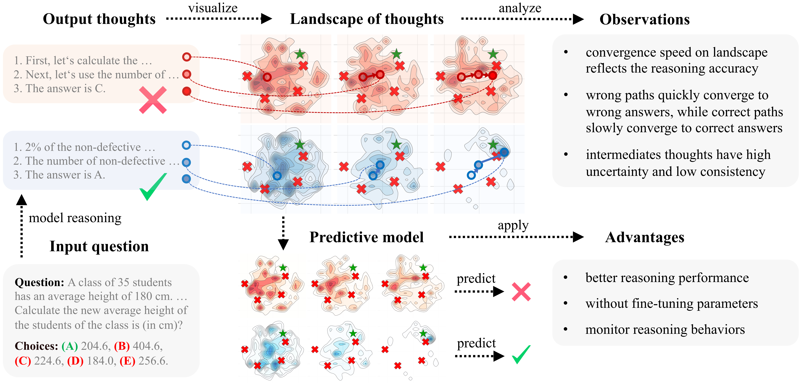
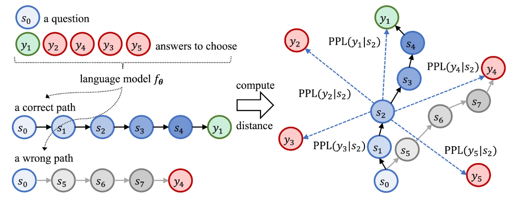
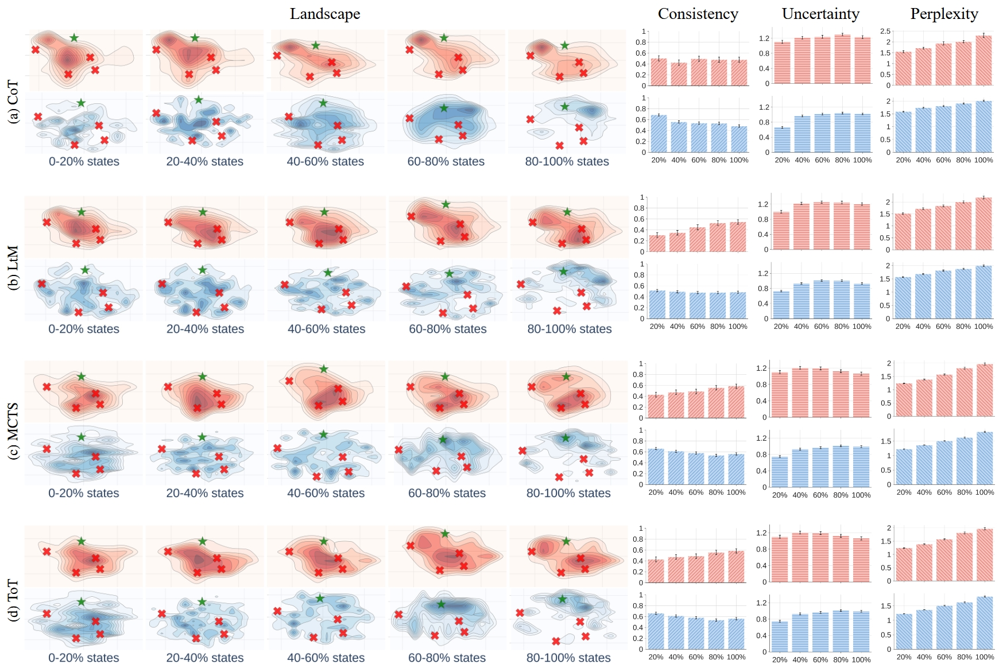
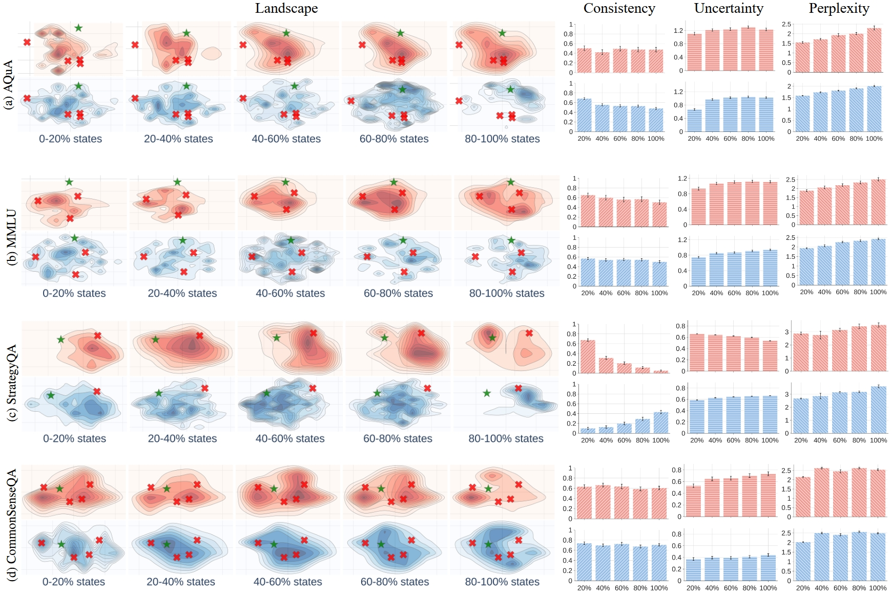
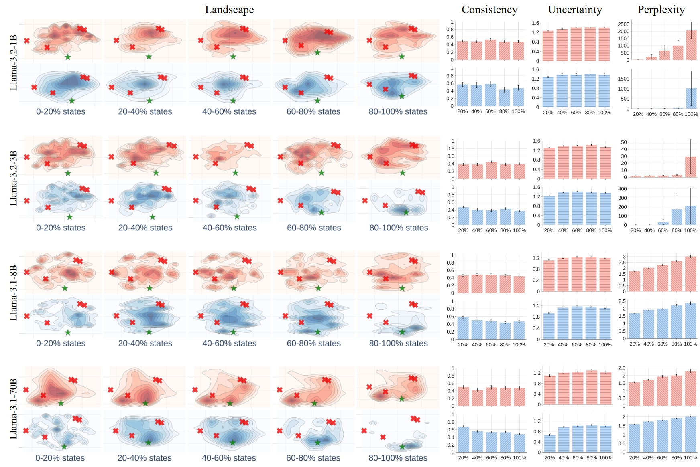
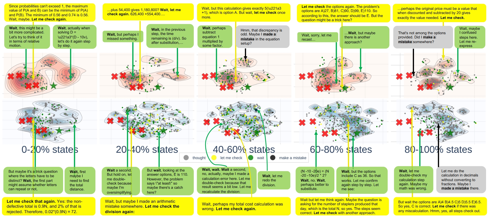
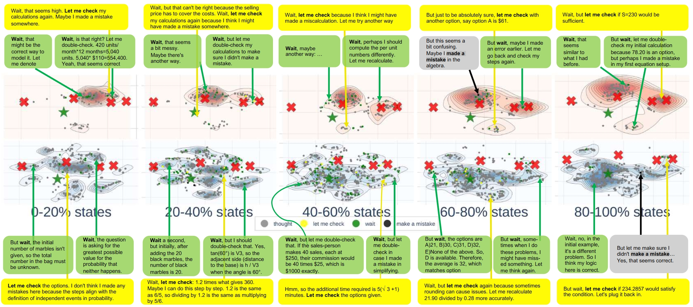
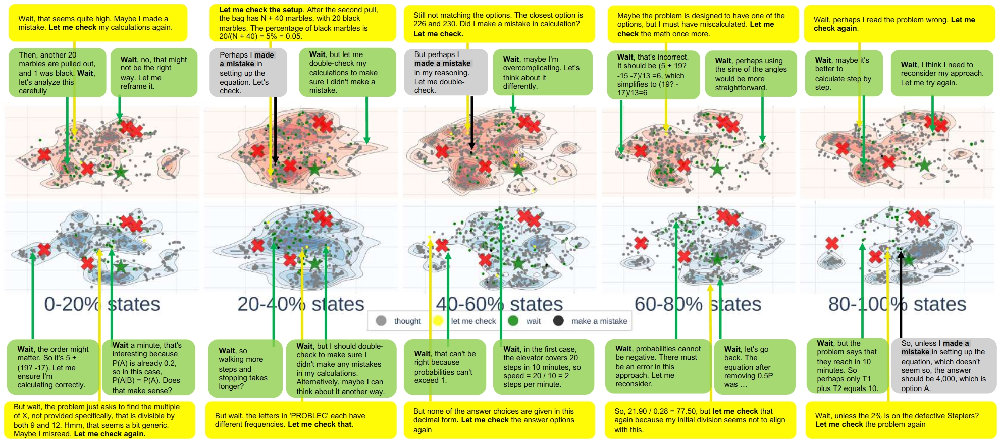
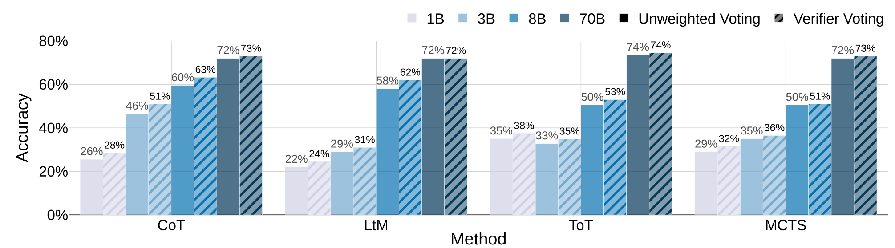
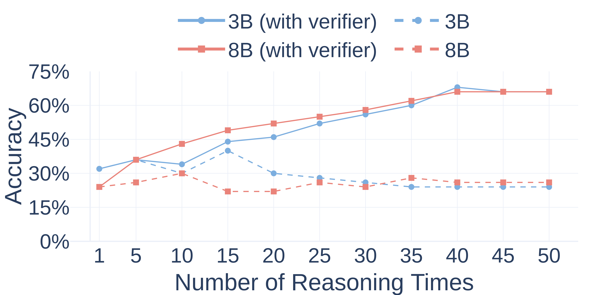

Large language models (LLMs) increasingly rely on step-by-step reasoning for various applications, yet their reasoning processes remain poorly understood, hindering research, development, and safety efforts. To address this, we introduce Landscape of Thoughts, the first visualization tool designed to explore the reasoning paths of chain-of-thought and its derivatives across any multiple-choice dataset. We represent reasoning states as feature vectors, capturing their distances to all answer choices, and visualize them in 2D using t-SNE. Through qualitative and quantitative analysis, Landscape of Thoughts effectively distinguishes strong versus weak models, correct versus incorrect answers, and diverse reasoning tasks. It also reveals undesirable reasoning patterns, such as inconsistency and high uncertainty. Furthermore, users can adapt the tool to predict specific properties, as demonstrated by a lightweight verifier that evaluates reasoning correctness.
LLMs excel in tasks like tool use and step-by-step reasoning, but their reasoning processes are not well understood. Reading their generated reasoning texts is time-consuming. Landscape of thoughts approach uses visualization plots to intuitively analyze and clarify the LLM reasoning process for users.

Figure 1. Landscape of thoughts for visualizing the reasoning steps of LLMs.
We show the examples of landscape of thoughts: visualization of AQuA using Llama-3.1-70B across different reasoning methods.
The visualization of the reasoning process can be conducted by the following steps.

Figure 2. Implementation details of Landscape of Thoughts.
We analyze the landscape of thoughts across different methods, datasets and LLMs.

Figure 3. Comparing the landscapes and corresponding metrics of four reasoning algorithms (using Llama-3.1-70B on the AQuA dataset).
We can use Landscape of Thoughts to analyze the reasoning process of different algorithms.

Figure 4. Comparing the landscapes and corresponding metrics of different datasets (using Llama-3.1-70B with CoT).
We can use Landscape of Thoughts to analyze the reasoning process of different datasets.

Figure 5. Comparing the landscapes and corresponding metrics of different language models (with CoT on the AQuA dataset).
We can use Landscape of Thoughts to analyze the reasoning process of different models.
We present visualizations of the reasoning process for several advanced language models. Specifically, we analyze the CoT reasoning patterns of QwQ-32B, DeepSeek-R1-Distilled-Llama-70B, and DeepSeek-R1-Distilled-Qwen-1.5B on the AQuA dataset.

Figure 6. Landscape of QwQ-32B using CoT on AQuA.

Figure 7. Landscape of DeepSeek-R1-Distilled-Llama-70B using CoT on AQuA.

Figure 8. Landscape of DeepSeek-R1-Distilled-Qwen-1.5B using CoT on AQuA.
Based on the observations from visualization, the landscape of thoughts method has the potential to be adapted to a model to predict any property users observe, here we show examples of using it to predict the correctness of the reasoning paths.
Figure 9. Reasoning accuracy averaging across all dataset.

Then, we investigate the inference-time scaling effect of the verifier by adjusting the number of reasoning paths.
Figure 10. Demonstration of the inference-time scaling effect of the verifier.

Welcome to check our paper for more details of the work. If there is any question, please feel free to contact us.
If you find our paper and repo useful, please consider to cite:
@article{zhou2025landscape,
title={Landscape of Thoughts: Visualizing the Reasoning Process of Large Language Models},
author={Zhou, Zhanke and Zhu, Zhaocheng and Li, Xuan and Galkin, Mikhail and Feng, Xiao and Koyejo, Sanmi and Tang, Jian and Han, Bo},
journal={arXiv preprint arXiv:2503.22165},
year={2025},
url={https://arxiv.org/abs/2503.22165}
}